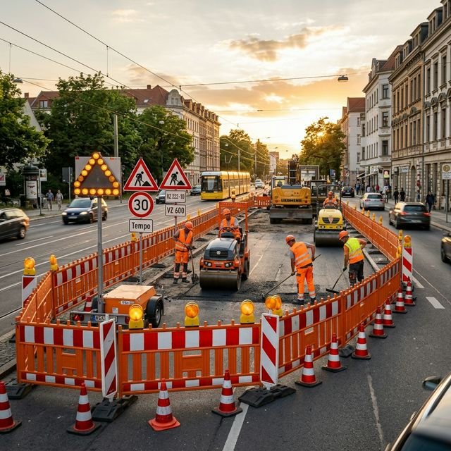

Professionelle
Baustellenabsicherung
Komplette Sicherung Ihrer Baustelle im Straßenverkehr: Beschilderung, Absperrungen, Beleuchtung und Verkehrsführung – alles aus einer Hand, RSA-konform und zuverlässig.
Was umfasst eine Baustellenabsicherung?
Die Baustellenabsicherung ist die fachgerechte Sicherung von Arbeitsstellen im Straßenverkehr nach den Richtlinien für die Sicherung von Arbeitsstellen (RSA). Sie schützt Bauarbeiter, Verkehrsteilnehmer und Passanten gleichermaßen und ist gesetzlich vorgeschrieben.
Als erfahrener Dienstleister übernehmen wir die komplette Baustellenabsicherung für Sie: von der Erstellung des Verkehrszeichenplans über die Beantragung der verkehrsrechtlichen Anordnung bei der zuständigen Straßenverkehrsbehörde bis zum fachgerechten Aufbau, der laufenden Kontrolle und dem Abbau aller Absicherungseinrichtungen.
Unser Leistungsspektrum reicht von der einfachen Gehwegabsicherung bis zur komplexen Autobahnbaustelle mit mehrstufiger Verkehrsführung, Umleitungsbeschilderung und Lichtsignalanlagen. Dabei setzen wir auf modernste Absperrtechnik und MVAS-geschultes Fachpersonal.
Unsere Absicherungsleistungen
Absperrbaken & Leiteinrichtungen
Aufstellung aller erforderlichen Absperrbaken, Leitschwellen und Leitborde zur sicheren Verkehrsführung.
Verkehrszeichen & Beschilderung
Fachgerechte Aufstellung aller Warn-, Verbots- und Hinweiszeichen inkl. Umleitungsbeschilderung.
Warnleuchten & Beleuchtung
LED-Warnleuchten, Baustellenbeleuchtung und reflektierende Elemente für Tag- und Nachtsicherung.
Verkehrszeichenpläne
Erstellung maßstabsgetreuer Verkehrszeichenpläne als Grundlage für die behördliche Genehmigung.
Kontrollfahrten & Wartung
Regelmäßige Überprüfung aller Absicherungselemente mit sofortiger Mängelbeseitigung und Dokumentation.
Genehmigungen & Anordnungen
Komplette Beantragung der verkehrsrechtlichen Anordnung bei der Straßenverkehrsbehörde.
Baustellenabsicherung für alle Bauarten
Von der kleinen Gehwegreparatur bis zur mehrspurigen Autobahnbaustelle – wir sichern jede Arbeitsstelle professionell ab.
Tiefbau & Kanalsanierung
Absicherung von Kanal-, Rohrleitungs- und Erdarbeiten mit Grabenbrücken, Fußgängerführung und Umleitungsbeschilderung.
Straßenbau & Deckenerneuerung
Großflächige Absicherung bei Asphaltier- und Straßenbauarbeiten – auch auf mehrspurigen Straßen mit Fahrbahneinengung.
Leitungsbau (Strom/Gas/Wasser)
Sicherung bei Verlegung und Reparatur von Versorgungsleitungen mit minimaler Verkehrsbeeinträchtigung.
Hochbau & Gerüstbau
Absicherung von Kran- und Gerüststellplätzen, Containerstellflächen und Baustellenzufahrten im öffentlichen Raum.
Gehweg- & Radwegabsicherung
Sichere Umleitung von Fußgängern und Radfahrern mit barrierefreien Zugängen und taktilen Leitsystemen.
Nacht- & Wochenendarbeiten
Spezielle Beleuchtungskonzepte und reflektierende Absicherung für Arbeiten bei Dunkelheit und an Wochenenden.
Baustellenabsicherung in 5 Schritten
Von der Anfrage bis zum Abbau – wir sorgen für eine reibungslose und sichere Baustellenabsicherung.
Projektdetails & Beratung
Teilen Sie uns Standort, Art der Bauarbeiten, geplanten Zeitraum und besondere Anforderungen mit. Wir beraten Sie zur optimalen Absicherungslösung.
Verkehrszeichenplan erstellen
Wir erstellen einen maßstabsgetreuen Verkehrszeichenplan nach RSA-Regelplänen – individuell auf Ihre Baustelle zugeschnitten.
Genehmigung einholen
Wir beantragen die verkehrsrechtliche Anordnung bei der zuständigen Straßenverkehrsbehörde und koordinieren alle Abstimmungen.
Aufbau & Fotodokumentation
Unsere MVAS-geschulten Mitarbeiter bauen alle Absicherungselemente fachgerecht auf. Jeder Aufbau wird fotografisch dokumentiert.
Kontrolle, Wartung & Abbau
Regelmäßige Kontrollfahrten stellen die korrekte Absicherung sicher. Nach Bauende erfolgt der vollständige Abbau und die Rückgabe der Genehmigung.
Was kostet eine Baustellenabsicherung?
Die Kosten für eine Baustellenabsicherung richten sich nach Umfang, Dauer, Straßenklasse und den benötigten Absicherungselementen. Hier ein Überblick der Kostenfaktoren:
Absperrungen & Beschilderung
Kosten für Absperrbaken, Verkehrszeichen, Leiteinrichtungen und deren Aufstellung. Je nach Baustellengröße und Straßenklasse individuell berechnet.
Verkehrszeichenplan
Erstellung des maßstabsgetreuen Plans nach RSA. Komplexität hängt von der Straßenklasse und der geplanten Verkehrsführung ab.
Behördliche Gebühren
Die zuständige Straßenverkehrsbehörde erhebt Gebühren für die verkehrsrechtliche Anordnung. Diese werden transparent weitergegeben.
Kontrollfahrten & Beleuchtung
Regelmäßige Kontrollfahrten und ggf. Warnleuchten oder Baustellenbeleuchtung werden nach Aufwand berechnet.
Fordern Sie jetzt Ihr kostenloses und unverbindliches Angebot an – exakt zugeschnitten auf Ihre Baustelle.
Häufig gestellte Fragen zur Baustellenabsicherung
Antworten auf die wichtigsten Fragen rund um professionelle Baustellenabsicherung.
Was kostet eine Baustellenabsicherung?
Die Kosten variieren je nach Umfang und Dauer. Einfache Gehwegabsicherungen beginnen ab ca. 150 Euro, komplexe Straßensperrungen werden individuell kalkuliert. Wir erstellen Ihnen ein kostenloses Angebot.
Welche Leistungen umfasst die Baustellenabsicherung?
Unsere Baustellenabsicherung umfasst: Erstellung von Verkehrszeichenplänen, Beantragung der verkehrsrechtlichen Anordnung, Aufstellung von Absperrbaken, Verkehrszeichen, Leiteinrichtungen, Warnleuchten und Umleitungsbeschilderung sowie regelmäßige Kontrollfahrten.
Brauche ich für jede Baustelle eine Genehmigung?
Ja, für jede Arbeitsstelle im öffentlichen Straßenraum ist eine verkehrsrechtliche Anordnung erforderlich. Auf Privatgelände ist dies nicht nötig. Wir beantragen die Genehmigung bei der zuständigen Behörde für Sie.
Wie schnell können Sie eine Baustelle absichern?
In Notfällen sind wir innerhalb von 24 Stunden einsatzbereit. Reguläre Absicherungen planen wir mit 5–10 Werktagen Vorlauf, da die verkehrsrechtliche Anordnung beantragt werden muss.
Was ist ein Verkehrszeichenplan?
Ein Verkehrszeichenplan (VZP) ist eine maßstabsgetreue Zeichnung, die alle erforderlichen Verkehrszeichen, Absperrungen und Leiteinrichtungen an der Baustelle darstellt. Er ist Voraussetzung für die verkehrsrechtliche Anordnung.
Sichern Sie auch Baustellen auf Autobahnen ab?
Ja, wir sichern Arbeitsstellen auf allen Straßenklassen ab – von der Gemeindestraße bis zur Autobahn. Für Autobahnbaustellen gelten besondere RSA-Regelpläne, die wir präzise umsetzen.
Was passiert bei Sturmschäden an der Absicherung?
Wir sind über unsere 24/7-Notfallnummer erreichbar und rücken bei Sturmschäden, Unfällen oder anderen Notfällen schnellstmöglich aus, um die Absicherung wiederherzustellen.
Übernehmen Sie auch Kontrollfahrten?
Ja, regelmäßige Kontrollfahrten sind Teil unserer Leistung. Wir prüfen Aufstellung, Sichtbarkeit und Funktionsfähigkeit aller Elemente. Mängel werden sofort behoben und dokumentiert.
Welche Normen gelten für die Baustellenabsicherung?
Die Absicherung erfolgt nach den RSA (Richtlinien für die Sicherung von Arbeitsstellen an Straßen) und dem MVAS (Merkblatt über Rahmenbedingungen für erforderliche Fachkenntnisse). Alle unsere Mitarbeiter sind entsprechend geschult.
Bieten Sie auch Nachtabsicherung an?
Ja, wir stellen LED-Warnleuchten, Baustellenbeleuchtung und reflektierende Leiteinrichtungen auf. Unsere Beleuchtung wird regelmäßig auf Funktionsfähigkeit geprüft.
Können Sie auch Gehwege und Radwege absichern?
Ja, Gehweg- und Radwegabsicherungen gehören zu unserem Kerngeschäft. Wir sorgen für sichere Umgehungsmöglichkeiten und barrierefreie Zugänge – besonders wichtig für Rollstühle und Kinderwagen.
In welchen Regionen sind Sie tätig?
Schwerpunktmäßig in Hamburg und im Umkreis von 100 km – große Teile von Schleswig-Holstein und Niedersachsen. Für größere Projekte auch überregional.
Baustellenabsicherung
jetzt anfragen
Teilen Sie uns die Details zu Ihrer Baustelle mit – Standort, Art der Arbeiten, Zeitraum und besondere Anforderungen. Wir erstellen Ihnen umgehend ein individuelles Angebot.
04131 3942977
info@verkehrssicherung-adler.de
Baustellenabsicherung in Ihrer Stadt
Wir sind in Hamburg, Schleswig-Holstein und Niedersachsen für Sie im Einsatz. Wählen Sie Ihren Ort für Details zur Baustellenabsicherung vor Ort.